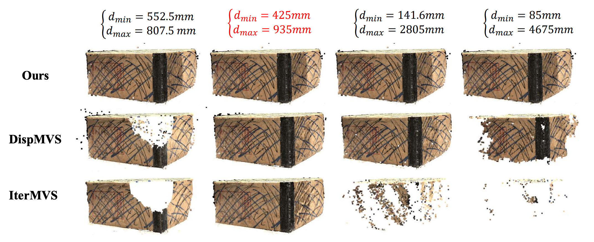
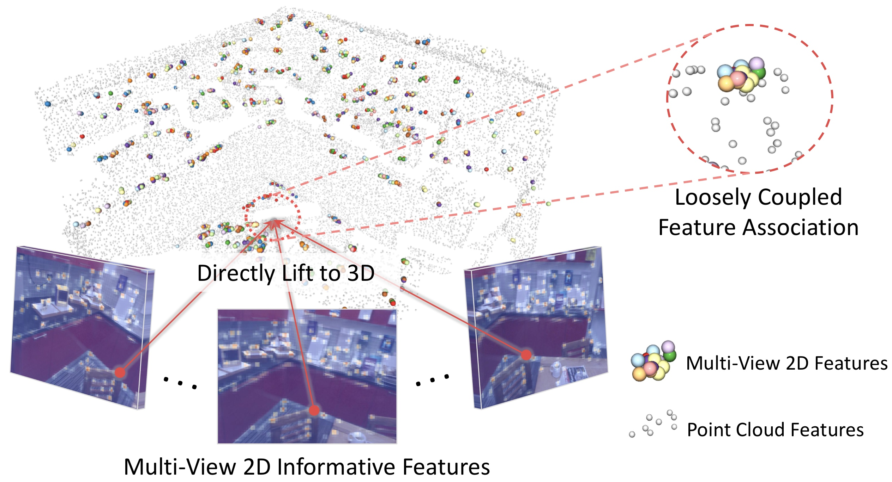

Publication
GS-DiT: Advancing Video Generation with Pseudo 4D Gaussian Fields through Efficient Dense 3D Point Tracking
CVPR 2025
Paper
OpticFusion: Multi-Modal Neural Implicit 3D Reconstruction of Microstructures by Fusing White Light Interferometry and Optical Microscopy
3DV 2025 (Oral, Award Candidate)
Paper
Multi-View Neural 3D Reconstruction of Micro-/Nanostructures with Atomic Force Microscopy
Communications Engineering 2024
(Nature, Selected by Nature Reviews Materials (IF=79.8) as Research Highlight)
Paper

A Global Depth-Range-Free Multi-View Stereo Transformer Network with Pose Embedding
NeurIPS 2024
Paper
ETO:Efficient Transformer-based Local Feature Matching by Organizing Multiple Homography Hypotheses
NeurIPS 2024
Paper
BlinkVision: A Benchmark for Optical Flow, Scene Flow and Point Tracking Estimation using RGB Frames and Events
ECCV 2024
Paper
ZoLA: Zero-Shot Creative Long Animation Generation with Short Video Model
ECCV 2024 (Oral)
Paper
Project Page
Context-TAP: Tracking Any Point Demands Spatial Context Features
NeurIPS 2023 (Spotlight)
Paper
Project Page
Multi-Modal Neural Radiance Field for Monocular Dense SLAM with a Light-Weight ToF Sensor
ICCV 2023 (Oral)
Paper
Project Page

Hybrid3D: learning 3D hybrid features with point clouds and multi-view images for point cloud registration
Science China Information Sciences 2023
Paper
Flowformer: A transformer architecture and its masked cost volume autoencoding for optical flow
Arxiv 2023
Paper
BlinkFlow: A Dataset to Push the Limits of Event-based Optical Flow Estimation
IROS 2023
Paper
Project Page
PATS: Patch Area Transportation with Subdivision for Local Feature Matching
CVPR 2023
Paper
Project Page
DELTAR: Depth Estimation from a Light-weight ToF Sensor And RGB Image
ECCV 2022
Paper
Project Page
Code
Neural Rendering in a Room: Amodal 3D Understanding and Free-Viewpoint Rendering for the Closed Scene Composed of Pre-Captured Objects
ACM Transactions on Graphics (SIGGRAPH 2022)
Paper
Project Page
Code
BlindHelper for Indoor Blind Navigation on Mobile Devices
Arxiv
Learning Object-Compositional Neural Radiance Field for Editable Scene Rendering
ICCV 2021
Paper
Project Page
Code


NIID-Net: Adapting Surface Normal Knowledge for Intrinsic Image
Decomposition in Indoor Scenes
TVCG 2020
Paper
Project Page
Code